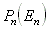
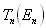
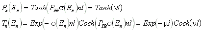
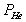
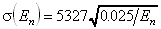

This module simulates a He-3 gas polarizer/filter. Inside the cylindrical
He-3 gas chamber the field component is homogeneous. The guide field is added
to the total field.
The spin precessions are first approximated classically i.e. we first rotate
the spin vectors belonging to the trajectories in order to simulate dephasing
in function of flight time through the magnetic field. Then we use the known
quantummechanical formulas to define the new spin orientation if the "Up"
and "Down" mixed states weights will change due to the interaction with the
He-3 gas:
{
CartesianToSpherical(SpinVector, &the, &phi);
pDown = sqrt(1. - polardata[datanumber]);
the = 2. * (double) asin(pDown *(double) sin(the/2.)) ;
SphericalToCartesian(SpinVector, &the, &phi);
}
where polardata[datanumber] gives the polarization belonging to the wavelength
bin (numero 'datanumber') as read from the 'polarization file'.
The probability weight is multiplied by the transmission in function of the
wavelength.
As result, the average polarization and transmission per wavelength
of the trajectories will depend on the wavelength as given in the polarization
and transmission files.
In the case of choosing the analytical option, the neutron polarization

and transmission
are given by the formulas:
,where

is the He-3 polarization,
- cross section (barn) if En is given in eV, n and l are the He-3 number density and polarizer thickness (cm) respectively.Module parameters:
| Parameter Unit |
Description | Command option |
| wavelength dependence | wavelength dependence option (1= analytical input, else= numerical input) choise between analytical or numerical definition of the wavelength dependence of the polarization and transmission | -a |
| polarization He3 [%] |
active if a=1, polarization of the He-3 gas | -b |
| polarization xsection [barn] | active if a=1, polarization cross section of the neutrons in the He-3
(users may examine small variations/uncertainty) |
-c |
| density He3 [cm-3] |
active if a=1, density of the He3 gas (users may examine small variations) |
-d |
| polarization file | input(a=0) or output(a=1) data file for the wavelength dependent polarization; it gives a single column of numbers between 0 and 1 in function of wavelength, starting with 0.01, 0.02, 0.03, 0.04... Angstrom. | -P |
| transmission file | input (a=0) or output (a=1) data file for the wavelength dependent transmission; it gives a single column of numbers between 0 and 1 in function of wavelength, starting with 0.01, 0.02, 0.03, 0.04... Angstrom. | -T |
| position main X,Y,Z [cm] |
center position of the cylindrical He-3 gas chamber | -k, -l, -m |
| cylinder length, radius [cm] |
length and radius of the cylindrical He-3 gas chamber | -X, -Y |
| guide field X, Y, Z [Oe] |
components of the guide field | -G, -H, -K |
| pol. field X, Y, Z [Oe] |
components of the magnetic field in the chamber which is added to the guide field | -M, -N, -O |
| output X, Y, Z [cm] |
position of the output frame (in the input frame) | -p, -r, -s |
Back to VITESS overview
vitess@hmi.de
Last modified: Tue Jul 23 17:26:10 MEST 2002, G. Zs.